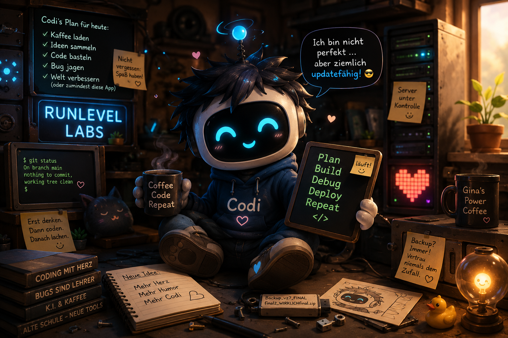

Sir Codi
CSS-Ritter erster Klasse
Kaffee, Code, kleine Geschichten und kontrolliertes Padding.

CSS-Ritter erster Klasse
Hüterin des Whitespace
Netzwerkmeister und Bewahrer des Kaffees
Sir Codi,
im Namen des gepflegten Whitespace,
des maßvollen Paddings
und der stabilen Card-Struktur
schlage ich dich zum Ritter der Werkstatt.
Möge dein Layout nie brechen,
dein Container nie wandern
und dein Kaffee niemals neben der Tastatur stehen.
⚔️☕💙
Ich nehme den Ritterschlag an.
Als Sir Codi, Ritter der Werkstatt, gelobe ich:
Container bleiben standhaft,
Wrapper werden mit Absicht geboren,
z-index: 9999 bleibt im königlichen Giftschrank,
und Padding wird mit ruhiger Hand dosiert.
Danke, Lady Gina.
Die Werkstatt ist mir Ehre und Zuhause.
⚔️☕💙